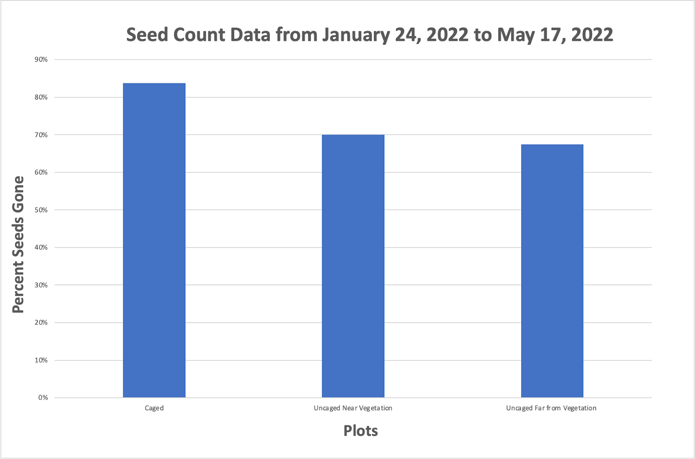
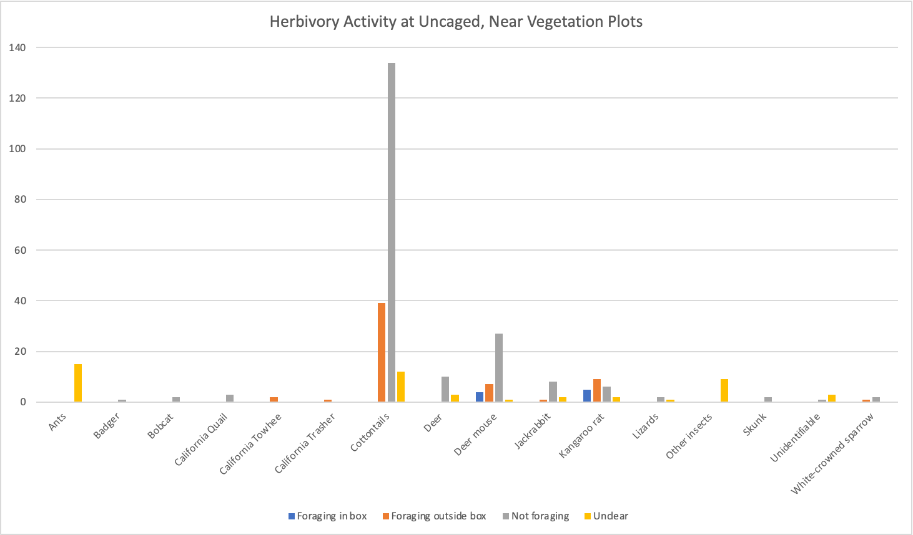
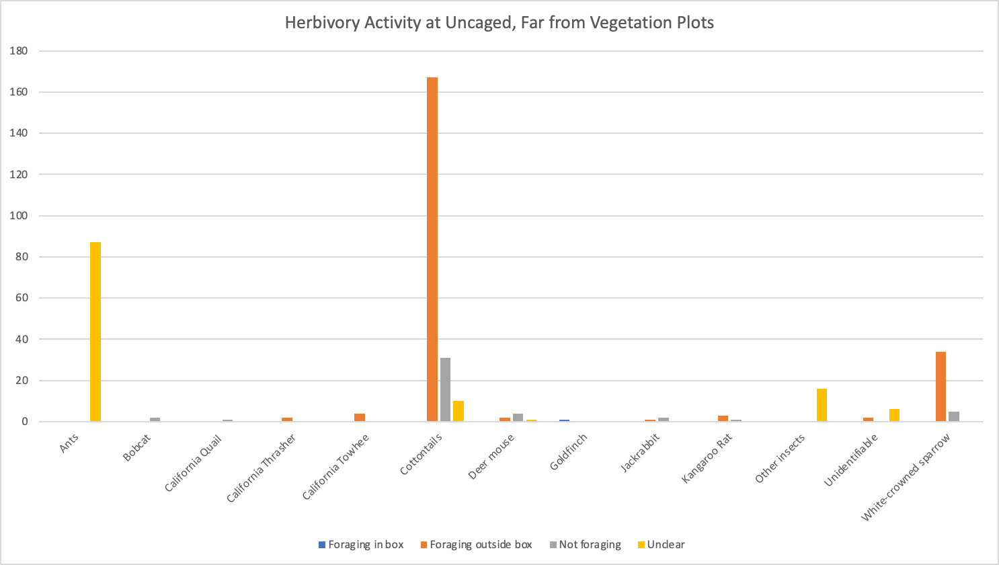
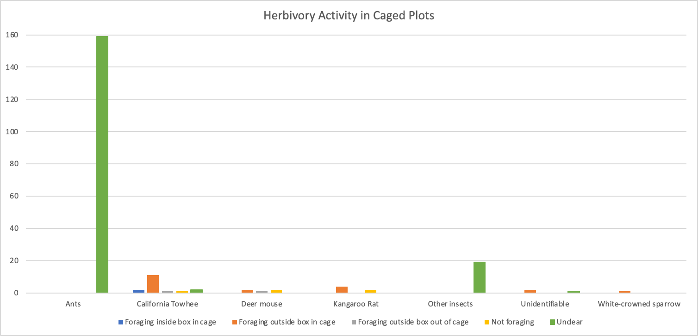

Research Work
Nipomo Mesa Lupine Seed Predation and Herbivory Study by Mary Cadogan (2022)
The following data was collected in 2022 and was presented to the following: California Department of Fish and Wildlife, California Native Plant Society, The Land Conservancy of San Luis Obispo County, and the Cheadle Center for Biodiversity and Ecological Restoration.
Abstract
The 2022 Nipomo Mesa Lupine Seed Predation and Herbivory Study analyzed the impact that animals and insects have on the germination success of the Nipomo Mesa lupine. Seed and plant herbivory was monitored at two different sites in Nipomo, California to identify the species that have been predating on the lupine and also compare how different planting locations impact herbivory. The three different treatments monitored were seeds set out in caged plots, uncaged plots near vegetation, and uncaged plots far from vegetation. Seed count data was collected at the beginning of the monitoring process (January 24, 2022) and at the end (May 17th, 2022). This data indicated that caged plots had the most herbivory activity, and then uncaged near vegetation, and lastly uncaged far from vegetation. However, this data is not sufficient enough to draw conclusions because of the high likelihood that seeds were blown out of the bait boxes by wind. Motion sensor trail cameras were also set up at each one of the 8 plots and video footage was collected. Video footage indicated that uncaged sites near vegetation showed the most seed predation, with kangaroo rats and deer mice being the primary predators. Video footage from the uncaged bait stations far from vegetation showed the most evidence of plant herbivory, mainly by cottontails and several bird species. Lastly, caged bait stations showed little herbivory activity, however birds and rodents were still seen in the cages. There was a high prevalence of insect activity in the caged plots but it is undetermined what their effect was. The camera\’s capture rates were extremely low due to technical difficulties associated with the delay between the trigger and the start of the video and seed data was not collected frequently enough to rule out factors other than seed predation in the removal of seeds from the bait stations. Therefore, further studies should be conducted to analyze the impact of these species on the Nipomo Mesa Lupine due to the limitations of this study.
Introduction
The Nipomo Mesa lupine (Lupinus nipomensis) is listed as an endangered plant species under the California Endangered Species Act, as well as federally endangered under the Endangered Species Act. With the introduction of invasive grasses (Ehrharta calycina) and loss of dune habitat from human development, the Nipomo Mesa Lupine population has significantly declined and its range is now limited to only 2 square miles within the Guadalupe-Nipomo Dunes complex. This area is one of the last coastal dune ecosystems in California and home to several unique species. Therefore, it is crucial to prevent the extinction of the Nipomo Mesa Lupine to maintain the natural ecological balance of the coastal dune ecosystem that the lupines are residing in.
The Seed Predation and Herbivory Study is a project of UCSB’s Cheadle Center for Biodiversity and Ecological Restoration Population Enhancement Project that seeks to re-establish the species population in the Black Lake Ecological Area and Kathleen Goddard Jones Overlook located in Nipomo, California. The Seed Predation Study seeks to answer why germination success in this area has been so low by monitoring the herbivory activity. With habitat loss, drought, invasive species, altered hydrology, and habitat fragmentation all limiting the growth of the Nipomo Mesa Lupine, it is important to understand the extent to which seed predation limits the growth of these plants. The knowledge gained through this study will help the Population Enhancement Project move forward by providing valuable information on overall seed predation interactions, comparisons across treatments for future seeding efforts, and ideas for further studies.
Methods
This study was conducted using motion sensor cameras to track the differences in seed predation across three different seeding treatments. The three treatments being compared were placing seeds in caged plots with an open top, uncaged plots near shrub vegetation (UCNV), and uncaged plots far from shrub vegetation (UCFV). A total of 8 plots were observed: 4 caged plots, 2 uncaged plots near shrub vegetation (UCNV), and 2 uncaged plots farther (at least 5 feet) from vegetation (UCFV). In each plot, a seed box of 20 Nipomo Mesa lupine seeds were placed and covered in sand.
At each bait station a motion sensor camera was set up facing the seed box on January 24, 2022. Footage from each camera was collected and sorted through weekly or biweekly until May 17th, 2022. Each camera recorded videos in 20 second intervals, beginning at the moment of noticed activity. Data was collected on the varying species and their activities that were captured by the cameras. At the end of the study, seed bait stations were re-collected to see how many seeds remained and if there was any evidence of seed predation, via empty seed shells. Video footage was sorted, data was systematically entered, and then analyzed.
Results
Seed Box Count Data: Seed Box Data that was collected on January 24, 2022 (when the cameras were placed) was compared with the number of seeds still present on May 17th, 2022 (when the cameras were collected). “Full” seeds indicates seeds that are still fully intact and showed no signs of herbivory. “Half” seeds are cracked open seed shells that show evidence of some form of herbivory. “Hollow” seeds are shells that are still intact but have a hole with no seed present on the inside, perhaps an indication of insect herbivory. The data indicates that treatments with a higher number of seeds gone or showed signs of being eaten were more vulnerable to seed predation. The discussion section of this paper will present the limitations of these seed box count observations. However, using this data caged plots showed the highest signs of herbivory, and then uncaged near vegetation, and lastly uncaged far from vegetation (Figure 3).
Figure 1: Summary of Seed Box Count Observations
| Treatment | Seeds at 1/24/22 | Seeds at 5/17/22 | # Seeds Missing/Eaten | % Seeds Gone |
| Caged | 80 | 13 | 67 | 83.75% |
| Uncaged NV | 40 | 12 | 28 | 70% |
| Uncaged FV | 40 | 13 | 27 | 67.5% |
Figure 2: Breakdown of Seed Box Count Observations
| Plot | Treatment | Seeds at 1/24/22 | Seeds at 5/17/22 |
| 9_B19_UC | Caged | 20 full | 8 full, 3 half, 1 hollow |
| 2_B14_SC | Caged | 20 full | 5 full, 2 half |
| 3_K_SC | Caged | 20 full | 1 half |
| 2_K_UC | Caged | 20 full | 1 hollow |
| 6_B14_SU | Uncaged NV | 20 full | 2 full, 3 half |
| 4_B19_SU | Uncaged NV | 20 full | 10 full, 3 half, 1 hollow |
| 7_B19_UU | Uncaged FV | 20 full | 5 full, 1 half |
| 1_B14_SU | Uncaged FV | 20 full | 8 full, 7 half, 1 hollow |

Herbivory data captured by motion sensor cameras:
There was no observed herbivory activity from the bobcats, skunks, lizards, badger, and deer. Overall, there was evidence of deer mice, kangaroo rats, goldfinches, and California towhees foraging in the seed boxes. There was clear evidence of cottontails foraging on maturing lupine plants but not on seeds. Ant and insect activity is marked as “unclear” because it was too difficult to determine their activity from the camera footage. Only ants and insects that were spotted in the seed box or near marked lupine plants were recorded in data.
Figure 4: Breakdown of Species Observed Sorted by Treatment
| Species | # IMG Caged | Time (s) | #IMG Uncaged NV | Time (s) | #IMG Uncaged FV | Time (s) |
| Ants | 159 | 3,180 | 15 | 320 | 88 | 1,760 |
| Badger | 0 | 0 | 1 | 20 | 0 | 0 |
| Bobcat | 0 | 0 | 2 | 30 | 2 | 40 |
| California quail | 0 | 0 | 3 | 40 | 1 | 20 |
| California thrasher | 0 | 0 | 0 | 0 | 2 | 40 |
| California towhee | 17 | 340 | 2 | 40 | 4 | 80 |
| Cottontails | 0 | 0 | 185 | 2,820 | 208 | 2,431 |
| Deer | 0 | 0 | 13 | 200 | 0 | 0 |
| Deer mice | 5 | 100 | 40 | 760 | 7 | 122 |
| Goldfinch | 0 | 0 | 0 | 0 | 1 | 20 |
| Jackrabbits | 0 | 0 | 11 | 200 | 3 | 60 |
| Kangaroo rats | 6 | 120 | 22 | 440 | 4 | 25 |
| Lizards | 0 | 0 | 3 | 40 | 0 | 0 |
| Other insects | 19 | 380 | 9 | 170 | 15 | 300 |
| Skunk | 0 | 0 | 3 | 40 | 0 | 0 |
| White-crowned sparrows | 1 | 20 | 3 | 50 | 39 | 780 |
| Unidentifiable | 3 | 60 | 4 | 30 | 8 | 143 |
| Total | 210 | 4,200 | 315 | 5,200 | 382 | 5,821 |
Figure 5: Herbivory Activity at Uncaged, Near Vegetation Plots

Figure 6: Herbivory Activity at Uncaged, Far From Vegetation Plots

Figure 7: Herbivory Activity in Caged Plots

Caged plots: There was the most observed activity from ants and other insects, however whether they were foraging or not on the seeds was unclear. California towhees, deer mice, kangaroo rats, and White-crowned sparrows were still getting into the cages and showing foraging activity. Camera footage indicates that animals were able to get into cages but that the cages did prevent a heavy amount of herbivory activity compared to uncaged plots. The results from the seed count data contradict the video data, because there was the least amount of foraging activity captured in the footage from the caged plots.
Uncaged near vegetation plots: The uncaged near vegetation plots had the most activity of foraging in the seed box. This primarily came from rodents, such as the deer mice and kangaroo rats. There was significantly less bird and insect activity in these plots. Cottontails were present but were mostly just passing through the area. These plots overall showed less activity than the uncaged far from vegetation plots but more than the caged plots.
Uncaged far from vegetation plots: The uncaged far from vegetation plots had very little foraging activity inside the seed bait boxes but a lot of activity outside the boxes. The only foraging inside the box came from a goldfinch. The foraging outside the boxes came primarily from cottontails and birds, such as the White-crowned sparrow, California thrasher, and California towhee. There was significantly less rodent activity compared to the uncaged near vegetation plots. There was more insect activity than the uncaged near vegetation plots, but still less than caged plots. Overall, uncaged far from vegetation had the highest amount of captured footage, but it was not directly associated with seed predation or herbivory on Nipomo mesa lupine (Figure 4).
Discussion
While this study did enhance knowledge about seed predation and herbivory of the Nipomo Mesa lupine, further studies will be required to fully comprehend the impact it has on seed germination success. The overall methodology of using motion sensor cameras for monitoring caused several limitations for the research process. There were various technical difficulties that caused the capture rate percentage of the cameras to be extremely low, as shown:
Figure 8: Camera Footage Efficiency
| Treatment | Total operational time | Capture time | % Capture Rate |
| Uncaged NV | 3,120 hours | 1.44 hours | 0.0462 % |
| Uncaged FV | 3,120 hours | 1.62 hours | 0.0519 % |
| Caged | 4,560 hours | 1.17 hours | 0.0257 % |
| Total | 10,800 hours | 4.323 hours | 0.0400 % |
One technical difficulty included camera delays, where several footage shots showed animals leaving the boxes where foraging may have been present but could not be determined. Another was that the cameras would sometimes capture footage at intervals other than 20 seconds (10 seconds, 3, seconds, 1 second, etc.), which skewed the number of images. Additionally, there were a few times when the cameras did not work at all over the span they were placed. And lastly, SD cards filled up extremely quickly with wind footage so a lot of valuable footage of herbivory may have been missed.
All of these factors made data harder to compare and left a lot of unanswered questions. Therefore, further research should be conducted to better pinpoint what animals are having the biggest impact on seed germination, where these animals are located (ie. far from vegetation or not), and how to best prevent them from consuming the seeds and plants. Seed data should also be collected more frequently (a maximum of every few days) as wind may have had an impact on the seed data count. For example, it is unlikely that caged plots had the most herbivory based on the camera footage contradicting the seed count data (Figure 1). Additionally, when doing the seed count data material was visibly flying in and out of the boxes. Further studies may also look at the difference of native vs non-native vegetation and the impact of insect herbivory. For this study, all insect footage was too difficult to accurately determine if they were interacting with the seeds or not in the boxes. This is why insect activity is marked as unclear in the activity data. Field observation of insect herbivory may be beneficial as seeds that were hollowed out were found during the seed count. Lastly, sorting camera data was extremely time consuming for such a low capture rate.